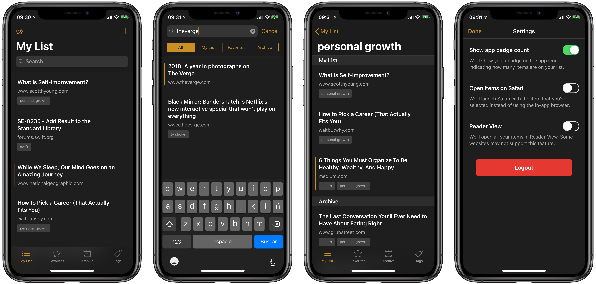

About Me
Hi there! I'm an iOS Developer working at Future Workshops in Barcelona, Spain. I started my journey on the Apple ecosystem back in 2015, and I've been building iOS apps full-time since then.
How do I work
My bread & butter is Swift, even though I've been writing Objective-C 🦕 on frameworks.
I try to keep the code as simple as possible, and I have strong feelings against using dependencies for code that you can write yourself. The same applies to using VIPER, MVVM, MVP or the new hot architectural pattern that's trendy this week.
I tend to work using MVC+Coordinators as my architectural pattern because it's been proven successful in every way. Most of the time my UI is built on Interface Builder using .xib files due to the lack of dependency injection on .storyboards. My model layer is CoreData if persistence is a requirement.
I'm also a firm believer in following the Human Interface Guidelines. They're there for a reason.
Projects
Llitgi
Llitgi is an iOS client for Pocket, available on iPhone and iPad. It makes browsing & searching for your articles much easier and faster because your entire library is saved on the device. These are some of the key features:
- Swipe to trigger actions. Right for Favorite and Tags, left for Archive and Delete
- Save from any app using the App Extension
- Save directly on the app from the pasteboard
- Add and remove favorite links
- Archive/Unarchive links
- Tag items, rename & remove tags in batch
- Instant search on your entire library
- No user tracking/analytics on the app
- Free and Open Source

You can view it on GitHub or on the AppStore.